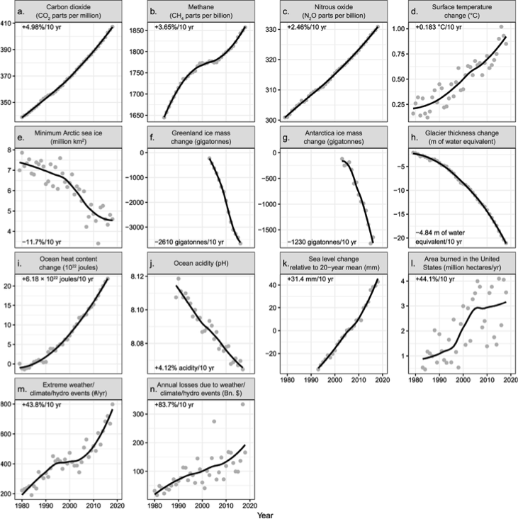

RESOLUTION
Recognizing the duty of the Federal Government to create a Green New Deal.
Whereas the October 2018 report entitled ‘‘Special Report on Global Warming of 1.5 oC’’ by the Intergovernmental Panel on Climate Change and the November 2018 Fourth National Climate Assessment report found that—
- human activity is the dominant cause of observed climate change over the past century;
- a changing climate is causing sea levels to rise and an increase in wildfires, severe storms, droughts, and other extreme weather events that threaten human life, healthy communities, and critical infrastructure; 
- global warming at or above 2 degrees Celsius beyond preindustrialized levels will cause—
- global temperatures must be kept below 1.5 degrees Celsius above preindustrialized levels to avoid the most severe impacts of a changing climate, which will require—
- global reductions in greenhouse gas emissions from human sources of 40 to 60 percent from 2010 levels by 2030; and
- net-zero global emissions by 2050;
- by impacting the economic, environmental, and social stability of countries and communities around the world; and
- by acting as a threat multiplier;
- to create millions of good, high-wage jobs in the United States;
- to provide unprecedented levels of prosperity and economic security for all people of the United States; and
- to counteract systemic injustices: Now, therefore, be it
it is the duty of the Federal Government to create a Green New Deal—
- to achieve net-zero greenhouse gas emissions through a fair and just transition for all communities and workers;
- to create millions of good, high-wage jobs and ensure prosperity and economic security for all people of the United States;
- to invest in the infrastructure and industry of the United States to sustainably meet the challenges of the 21st century;
- to secure for all people of the United States for generations to come—
- clean air and water;
- climate and community resiliency;
- healthy food;
- access to nature; and
- a sustainable environment; and
- to promote justice and equity by stopping current, preventing future, and repairing historic oppression of indigenous peoples, communities of color, migrant communities, deindustrialized communities, depopulated rural communities, the poor, low-income workers, women, the elderly, the unhoused, people withdisabilities, and youth (referred to in this resolution as ‘‘frontline and vulnerable communities’’);
the goals described in subparagraphs (A)through (E) of paragraph (1) (referred to in this resolution as the ‘‘Green New Deal goals’’) should be accomplished through a 10-year national mobilization (referred to in this resolution as the ‘‘Green New Deal mobilization’’) that will require the following goals and projects—
a Green New Deal must be developed through transparent and inclusive consultation, collaboration, and partnership with frontline and vulnerable communities, labor unions, worker cooperatives, civil society groups, academia, and businesses; and
to achieve the Green New Deal goals and mobilization, a Green New Deal will require the following goals and projects—
Whereas, because the United States has historically been responsible for a disproportionate amount of greenhouse gas emissions, having emitted 20 percent of global greenhouse gas emissions through 2014, and has a high technological capacity, the United States must take a leading role in reducing emissions through economic transformation;
Animation: The countries with the largest cumulative CO2 emissions since 1750
— Carbon Brief (@CarbonBrief) April 23, 2019
Ranking as of the start of 2019:
1) US – 397GtCO2
2) CN – 214Gt
3) fmr USSR – 180
4) DE – 90
5) UK – 77
6) JP – 58
7) IN – 51
8) FR – 37
9) CA – 32
10) PL – 27 pic.twitter.com/cKRNKO4O0b
Whereas the United States is currently experiencing several related crises, with—
Whereas climate change, pollution, and environmental destruction have exacerbated systemic racial, regional, social, environmental, and economic injustices(referred to in this preamble as ‘‘systemic injustices’’)by disproportionately affecting indigenous peoples, communities of color, migrant communities, deindustrialized communities, depopulated rural communities, the poor, low-income workers, women, the elderly, the unhoused, people with disabilities, and youth (referred to in this preamble as ‘‘frontline and vulnerable communities’’);
Whereas, climate change constitutes a direct threat to the national security of the United States—
Whereas the Federal Government-led mobilizations during World War II and the New Deal created the greatest middle class that the United States has ever seen, but many members of frontline and vulnerable communities were excluded from many of the economic and societal benefits of those mobilizations; and
Whereas the House of Representatives recognizes that a new national, social, industrial, and economic mobilization on a scale not seen since World War II and the New Deal era is a historic opportunity—